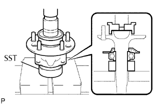
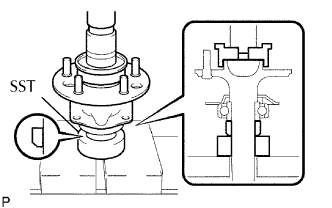
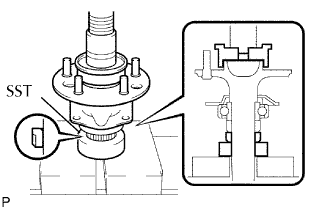
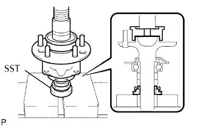
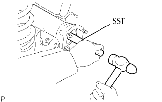
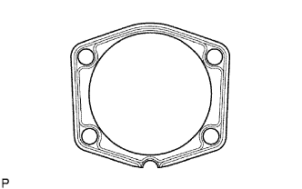
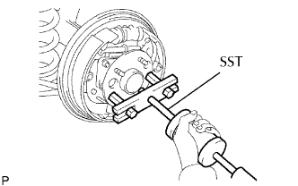
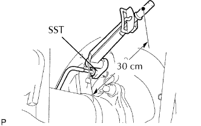
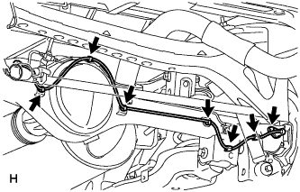

TRỤC CẦU SAU > LẮP |
| 1. LẮP VÒNG BI TRỤC CẦU SAU VÀ CHẶN BÊN NGOÀI |
|  |
Lắp vành chặn ngoài vòng bi.
Dùng SST và máy ép, ép vành hãm và vòng bi mới vào trục cầu xe.
| 2. LẮP VÀNH CHẶN BÊN TRONG VÒNG BI CẦU SAU |
|  |
Nung nóng hãm bên trong lên tới khoảng 150°C (302°F).
Dùng SST và máy ép, ép vòng hãm bên trong lên trục cầu xe trong khi hãm bên trong đang còn nóng.
| 3. LẮP RÔTO CẢM BIẾN TỐC ĐỘ ABS (w/ ABS) |
|  |
Dùng SST và máy ép, ép rôto cảm biến tốc độ ABS vào trục cầu xe.
| 4. LẮP PHỚT DẦU PHÍA TRONG TRỤC CẦU SAU |
|  |
Dùng SST và máy ép, ép phớt dầu mới vào trục cầu xe.
| 5. LẮP PHỚT DẦU TRỤC CẦU SAU |
|  |
Bôi mỡ MP lên lợi của phớt dầu mới.
Dùng SST, đóng phớt dầu vào.
| 6. LẮP CỤM TRỤC CẦU SAU |
|  |
Lắp gioăng vào vỏ cầu với phần vát quay xuống dưới.
Lắp phanh sau vào vỏ cầu sau.
Gióng lỗ của gioăng với vấu của vòng chặn và lắp gioăng.
|  |
Dùng SST, đóng trục cầu vào.
Quay vấu của vòng chặn bên ngoài xuống dưới.
Lắp giá bắt vòng chặn bên ngoài bằng 4 đai ốc.
| 7. LẮP ĐƯỜNG ỐNG PHANH |
|  |
Dùng SST, nối các ống phanh.
| 8. LẮP CẢM BIẾN TỐC ĐỘ SAU TRÁI (w/ ABS) |
|  |
Lắp cảm biến bằng bulông.
Lắp 6 kẹp.
Nối giắc cảm biến.
| 9. LẮP TRỐNG PHANH |
| 10. XẢ KHÍ ĐƯỜNG ỐNG PHANH TRƯỚC |
Hãy xả khí ra khỏi đường ống phanh. (Xem trang Kích chuột vào đây).
| 11. KIỂM TRA MỨC DẦU PHANH TRONG BÌNH CHỨA |
Kiểm tra mức dầu phanh trong bình chứa. (Xem trang Kích chuột vào đây).
| 12. KIỂM TRA RÒ RỈ DẦU PHANH |
| 13. LẮP BÁNH XE SAU |
| 14. KIỂM TRA VÀ ĐIỀU CHỈNH HÀNH TRÌNH CẦN PHANH TAY |
Kiểm tra và điều chỉnh hành trình cần phanh tay (Xem trang Kích chuột vào đây).
| 15. KIỂM TRA TÍN HIỆU CẢM BIẾN TỐC ĐỘ ABS (w/ABS) |
Kiểm tra tín hiệu cảm biến tốc độ ABS (Xem trang Kích chuột vào đây).